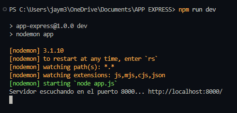
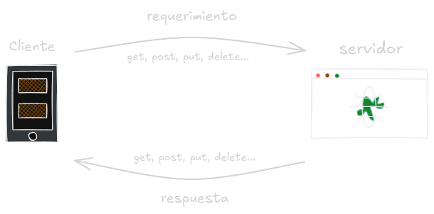
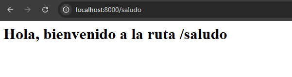

1. ¿Qué es el archivo package.json?
El archivo package.json es el corazón de cualquier proyecto Node.js o JavaScript moderno. Sirve como una especie de testamento que describe la configuración, dependencias, scripts y metadata de un proyecto.
El archivo package.json es el corazón de cualquier proyecto Node.js o JavaScript moderno. Sirve como una especie de testamento que describe la configuración, dependencias, scripts y metadata de un proyecto.
start o
test
index.js)
dev,
build, etc.
💡 El package.json es importantisimo en
proyectos
Node.js: configura, automatiza y define dependencias clave.
Para crear tu aplicación con express primero debemos crear nuestro archivo package.json con el siguiente comando:
npm init
También podemos usar -y para crearlo directamente sin preguntas de configuración:
npm init -y
npm install express
npm install --save-dev nodemon
💡 Nota: Usaremos nodemon para reinicios automáticos al detectar cambios.
Usualmente se llama index.js o app.js y se ubica en la raíz del proyecto.
Agregamos un script que utilice nodemon para desarrollo:
"scripts": {
"test": "echo \"Error: no test specified\" && exit 1",
"dev": "nodemon index"
}
const exp = require('express')
const app = exp()
const PORT = 8000
💡 Nota: Si el puerto está ocupado, prueba con otro entre el 8000 y el 9000.
app.listen(PORT, () => {
console.log(`Servidor escuchando en el puerto ${PORT}... http://localhost:${PORT}/`)
})
Te debería de aparecer algo como esto
npm run dev
Ya tenemos nuestro servidor listo, podemos hacer nuestra primera pequeña peticion, pero primero conozcamos que es el protócolo HTTP
HTTP permite que el navegador se comunique con un servidor web.
Métodos más comunes:
Creamos una ruta tipo GET que devuelve un saludo:
app.get('/saludo', (req, res) => {
res.send('<h1>Hola, bienvenido a la ruta /saludo</h1>')
})
💡 Nota: En este caso solo usaremos res dentro de la función, debido a que no se está solicitando una petición con cuerpo (body)
Te debería de aparecer algo como esto
¡Perfecto! Ya tienes tu servidor Express funcionando con una ruta básica.